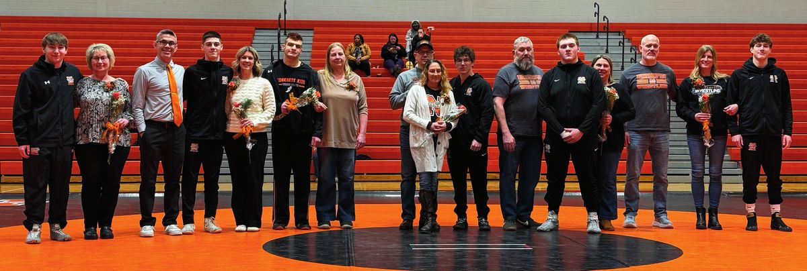

Parents
What parents and families need to know.
Who we are
Our mission
- Prepare student-athletes to become successful, happy adults.
- Help every athlete reach their individual potential in wrestling.
- Provide every athlete with a rewarding experience worth remembering.
- Leadership
- Reliability
- Integrity
- Honor
- Accountability
- Discipline
- Kindness
- Honesty
- Fairness
- Teamwork
Our promise to you
- We lift wrestlers up. We never embarrass a wrestler. Corrections are made in a way that builds them up.
- We believe in every wrestler. We see each one for who they can become, not just who they are today.
- We see parents as partners. We’re open, honest, and reachable, and we want you part of the program.
- We develop people first. Successful people, not just successful athletes.
For junior high & high school parents
How to be a Konkrete Kids parent
Ten things that matter most.
- 1Love them the same, win or lose.Before every match: “I’m proud of you no matter what.” After: “I love to watch you wrestle.”
- 2Be a great spectator.Stay in the stands and let the coaches coach. Keep your words to encouragement.
- 3Focus on growth, not results.Praise effort, improvement, and perseverance. Winning doesn’t always equal progress.
- 4Make the car ride a safe place.After a tough match, let them talk first and mostly listen. Save the lessons for practice.
- 5Let them speak for themselves.Wrestlers talk to their coaches first. If it’s still unresolved, contact Coach Provini privately.
- 6Wait 24 hours.Give emotions a day to settle before raising a concern with a coach.
- 7Support safe weight management.Follow the plan the coaches and athletic trainer set. Never pressure your wrestler about weight.
- 8Honor the game.Respect officials, opponents, and coaches. Cheer for our team, not against theirs.
- 9School and healthy habits first.Passing grades, good sleep, good food, and clean gear every day.
- 10Be part of the team.Come to matches, support the booster club, and trust the process.
Wrestling belongs to the athletes. It’s their thing, not ours.
Junior high & high school
The honor code, in brief
Northampton Wrestling is a commitment to excellence in academics, athletics, and character. Every wrestler and a parent sign the full honor code at the start of the season. The heart of it:
Academics
Wrestlers keep a passing grade in every class. Low grades can limit competition until they improve.
Reliability
Be on time and present for school, practice, and competitions. Injured wrestlers still attend unless a doctor or athletic trainer says otherwise.
Conduct
Represent Northampton with pride in school, online, and in the community. Show respect to coaches, teammates, opponents, trainers, and officials.
Health and hygiene
Check skin daily, shower right after practice and matches, and wear clean gear every day. Headgear is worn whenever drilling or wrestling.
Communication
Who to talk to
- Wrestler and coach. Wrestlers speak for themselves first. It’s one of the skills the sport teaches.
- Parent and head coach. If it’s still unresolved, contact Coach Provini privately and respectfully.
- Athletic administration. If it still needs attention after that.
The 24-hour rule. Emotions run high after a match. Please wait a day before raising a concern with a coach.
Health and weight
Healthy first
Youth wrestlers compete at their natural, healthy weight. No weight cutting.
Junior high and high school wrestlers go through the PIAA weight certification early in the season and follow a safe descent plan set with the coaches and athletic trainer. Wrestlers weigh in with a coach before every practice and stay hydrated.
Skin checks. Wrestlers are checked daily for skin infections. A doctor must complete the PIAA Communicable Skin Disease Form before a wrestler with a skin condition can compete.
Season at a glance
- High school seasonNovember – March
- PracticeEvery day but Sunday
- School daysRight after school
- High school, non-school daysGenerally 9:00 a.m.
- PostseasonDistrict XI, Regional, PIAA
- Home matchesPete Schneider Gymnasium
- BanquetSpring
Program expectations
Wrestlers are expected to be at every in-season practice and competition, and to represent Northampton with integrity on and off the mat.
In the youth program, only each team’s coaching staff is in the practice room, and in-season attendance is required: club practices and outside tournaments don’t replace team practice. Special circumstances are handled case by case.
FAQs
When does the season start?
The high school season begins in November and runs through the PIAA Championships in March. The full schedule is on our schedule page.
Where can I find the schedule?
On our schedule page and the district athletics calendar, which also lists bus times and changes.
What does a typical week look like?
Wrestlers practice or compete every day except Sunday. Practice generally starts right after school, and on non-school days the high school generally practices at 9:00 a.m.
What if my child misses practice?
In-season practice and competition attendance is required. Talk to your child’s coach about any special circumstances ahead of time; they’re handled case by case.
What does a wrestler need before the season?
Junior high and high school wrestlers need a PIAA physical on file with the district athletic office, plus the weight assessment the coaches schedule early in the season. Every wrestler and parent also signs the honor code.
How are varsity and JV spots decided?
Usually through wrestle-offs, though the coaches weigh several things when setting a lineup, including attitude, effort, and reliability. Once a spot is earned, a challenger must win two bouts in a row to take it.
How does a wrestler earn a varsity letter?
Complete the full season, compete in at least half of varsity matches, score as many team points as there are dual meets or place in a postseason tournament, and stay in good standing with the team.
What happens on snow days?
Plan to practice or compete, and to make weight, unless Coach Provini says otherwise. Changes are shared as soon as the coaches know.
Can parents watch youth practice?
In the youth program, only each team’s coaching staff is in the practice room. Matches and tournaments are open to families and fans.
How do I reach a coach?
Email northamptonareawrestlingclub@gmail.com and we’ll get your message to the right coach.
Booster club
The Northampton Area Wrestling Club supports the program from youth to varsity: the awards banquet, the Charlie Lerch Memorial and Brandon M. Sommer Memorial scholarships, team gear, travel expenses, and more. Volunteers keep it all running.